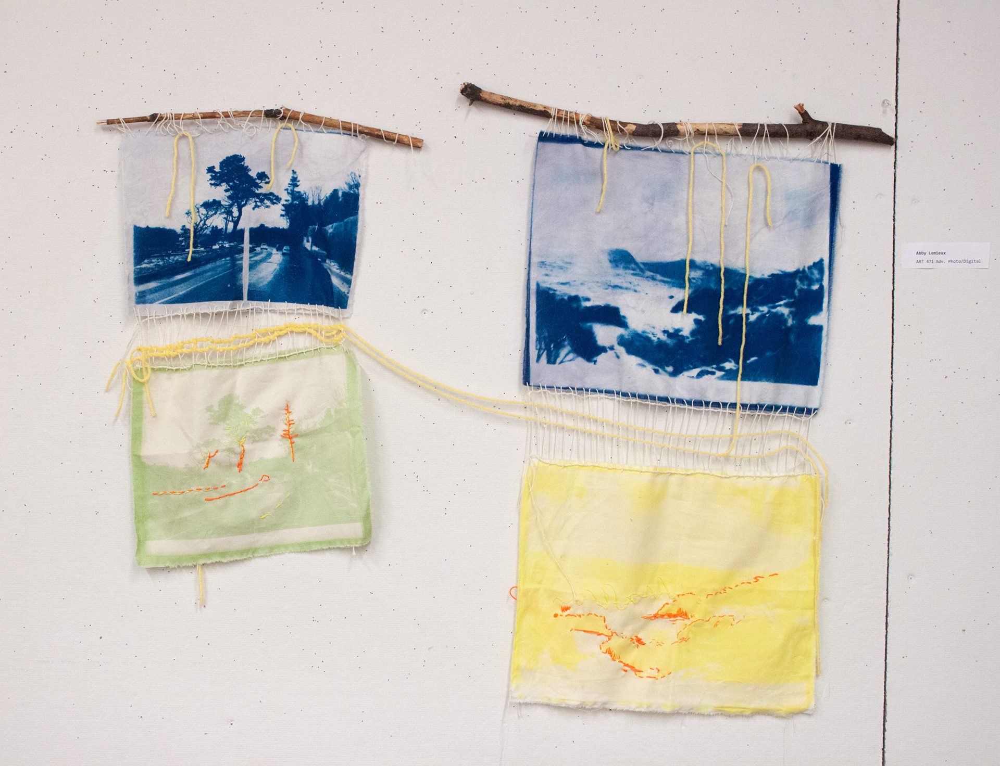

This project represents how many Americans are forced to drive, and therefore forced to contribute to carbon emissions due to poor public transit infrastructure. I combine cyanotypes and anthotypes of the same image to represent the natural and the unnatural, demonstrating the hyposcrisy of being an environmentalist but being forced to drive a non-electric vehicle everyday. I used spinach and tumeric as the dyes for the anthotypes, which will eventually fade away. On top of them, I traced the image by embroidering flourescent colors, remiscent of traffic cones and reflective gear. As the antotypes fade, they will leave only the obnoxious human-made colors behind. The cyanotypes are attached to the anthotypes with warp string, and a mini weaving is created between the two images using the twining stitch. The double yellow lines connecting the two sets of images represents the lines on a road.